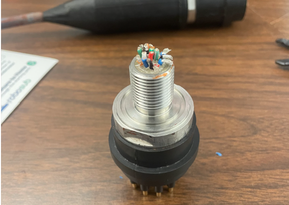
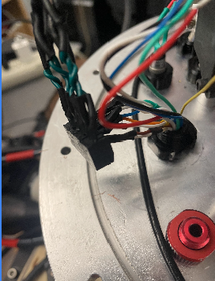

Ethernet Tether
This project involved soldering together an Ethernet tether for communicating with AUVIC's AUV.
The ends of the tether were soldered to a waterproof connector and tested to ensure functionality. The ends of the tether were then potted to make the whole thing waterproof.

Figure 1 — Waterproof connector

Figure 2 — Soldered tether

Figure 3 — Connection inside the AUV